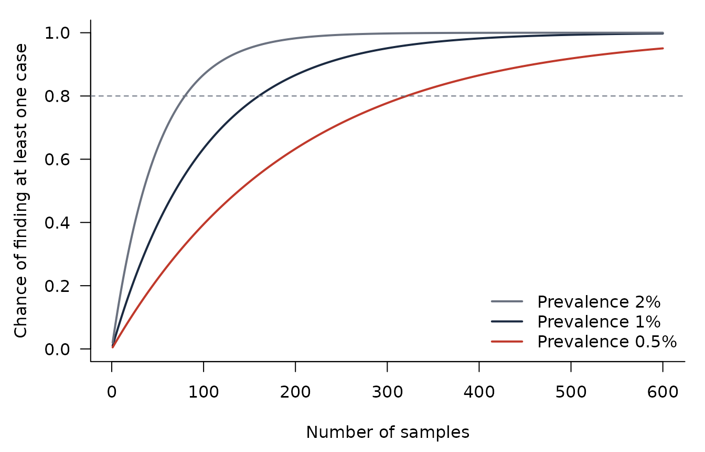

Some surveillance questions are not about how common a variant is, but whether it is there at all. A programme may want to know whether a new drug-resistance mutation has arrived in a region, or whether pfhrp2/3 deletions are present before planning a full prevalence survey. The aim is then a survey large enough that, if the variant is present at some low prevalence, at least one case is very likely to be found.
design_detection() answers this. Given a full design
instead, such as a survey that has already been done, it returns
detection_prob: how likely that survey was to find the
variant.
Part 1: Designing the study
How many samples?
Suppose the programme wants an 80% chance of finding at least one case if the mutation is present in 1% of infections:
d0 <- design_detection(prevalence = 0.01)
d0
#> $n
#> [1] 161
#>
#> $n_sites
#> NULL
#>
#> $n_per_site
#> NULL
#>
#> $deff
#> [1] 1
#>
#> $n_eff
#> [1] 161
#>
#> $detection_prob
#> [1] 0.8017257So 161 samples are needed. The calculation is simple: each sample has a 1% chance of being a case, so the chance of missing every case among samples is , and is chosen to make that at most 20%.
The answer depends strongly on the target chance and on the prevalence to be detected:
design_detection(prevalence = 0.01, detection_prob = 0.95)$n
#> [1] 299
design_detection(prevalence = 0.005)$n
#> [1] 322
design_detection(prevalence = 0.02)$n
#> [1] 80Raising the target from 80% to 95% takes 299 samples. Halving the prevalence to 0.5% roughly doubles the sample size, and doubling it to 2% roughly halves it. The plot shows the chance of finding at least one case for different sample sizes:
n_grid <- 1:600
par(mar = c(4.5, 4.5, 1, 1), las = 1, bty = "l")
plot(n_grid, 1 - (1 - 0.01)^n_grid, type = "l", lwd = 2, col = "#1B2A41",
ylim = c(0, 1), xlab = "Number of samples",
ylab = "Chance of finding at least one case")
lines(n_grid, 1 - (1 - 0.005)^n_grid, lwd = 2, col = "#C0392B")
lines(n_grid, 1 - (1 - 0.02)^n_grid, lwd = 2, col = "#6B7280")
abline(h = 0.8, lty = 2, col = "#6B7280")
legend("bottomright", bty = "n", lwd = 2,
col = c("#6B7280", "#1B2A41", "#C0392B"),
legend = c("Prevalence 2%", "Prevalence 1%", "Prevalence 0.5%"))
An imperfect test
A case is only found if the test detects it. With a sensitivity of 90%, each sample has a chance of being a detected case:
d_test <- design_detection(prevalence = 0.01, sensitivity = 0.9)
d_test$n
#> [1] 179The sample size rises from 161 to 179. Specificity is not used: a positive result is assumed to be confirmed (for example by sequencing) before the variant is declared present, so a false positive does not count as finding a case.
Clustering
Rare variants are often found in pockets: a new mutation may be common in one district and absent from the next. In that case, testing many people at one site mostly repeats what that site has already shown, and a survey needs to reach many sites to find the variant. As in the other design functions, this is described by the intra-cluster correlation (ICC). Here we assume an ICC of 0.05.
Fixing people per site. If each site can collect 20 samples:
d_per <- design_detection(prevalence = 0.01, n_per_site = 20, icc = 0.05)
d_per
#> $n
#> [1] 240
#>
#> $n_sites
#> [1] 12
#>
#> $n_per_site
#> [1] 20
#>
#> $deff
#> [1] 1.438433
#>
#> $n_eff
#> [1] 161
#>
#> $detection_prob
#> [1] 0.8130438The study needs 12 sites of 20 people, 240 samples in total, compared with 161 with no clustering.
Fixing the number of sites. If the programme can visit 10 sites:
d_sites <- design_detection(prevalence = 0.01, n_sites = 10, icc = 0.05)
d_sites
#> $n
#> [1] 250
#>
#> $n_sites
#> [1] 10
#>
#> $n_per_site
#> [1] 25
#>
#> $deff
#> [1] 1.541534
#>
#> $n_eff
#> [1] 161
#>
#> $detection_prob
#> [1] 0.8040557Each of the 10 sites now needs 25 people, 250 samples in total.
More sites, fewer samples. As for estimating prevalence, spreading the samples over more sites reduces the total needed:
d5 <- design_detection(prevalence = 0.01, n_sites = 5, icc = 0.05)
d20 <- design_detection(prevalence = 0.01, n_sites = 20, icc = 0.05)
c(sites_5 = d5$n, sites_10 = d_sites$n, sites_20 = d20$n)
#> sites_5 sites_10 sites_20
#> 410 250 200Going from 5 to 20 sites cuts the total from 410 to 200, close to the 161 an unclustered survey needs. Beyond that, the people per site are already small, and rounding up to whole people per site stops the total falling much further.
With few sites and strong clustering, the numbers can become impractical. With only 3 sites and an ICC of 0.3, the variant may simply be absent from all three, and no number of people per site makes up for that:
design_detection(prevalence = 0.01, n_sites = 3, icc = 0.3)$n_per_site
#> [1] 17821858014The answer is technically finite but far beyond any real survey. The only remedy is more sites.
Allowing for dropout and suspected cases
As with the other design functions, design_detection()
gives the number of samples needed at analysis. To
reach it, inflate for expected losses (withdrawn consent, lost or failed
samples) and, if the variant is looked for only in confirmed infections,
for the share of suspected cases that are confirmed. With 10% losses and
40% of suspected cases confirmed:
n_analysis <- d0$n
n_confirmed <- ceiling(n_analysis / (1 - 0.1))
n_suspected <- ceiling(n_confirmed / 0.4)
c(suspected = n_suspected, confirmed = n_confirmed, analysis = n_analysis)
#> suspected confirmed analysis
#> 448 179 161So 448 suspected cases are enrolled, 179 confirmed cases are expected among them, and 161 samples should reach the analysis. With sites, do this per site rather than only for the total, so that every site still delivers its share. The Estimating prevalence tutorial works through this in more detail, including confirmed fractions that differ by site.
Part 2: Interpreting a survey that found nothing
The same function is useful after a survey. Suppose 300 samples were
tested and no case of the mutation was found. How reassuring is that?
Give the full design, here n = 300, and the function
returns detection_prob, the chance that the survey would
have found the variant if it were present at 1%:
r0 <- design_detection(prevalence = 0.01, n = 300)
r0$detection_prob
#> [1] 0.9509591If the 300 samples were effectively independent, there was a 95% chance of finding a 1% variant, so finding none is good evidence that the prevalence is below 1%. But if the same 300 samples came from 15 sites of 20 people, with an ICC of 0.05:
r_sites <- design_detection(prevalence = 0.01, n_sites = 15, n_per_site = 20,
icc = 0.05)
r_sites$detection_prob
#> [1] 0.8770652the chance falls to 88%. The same number of negative results is weaker evidence when they come from a few sites, because a variant concentrated elsewhere could have been missed entirely. When reporting that a variant was not found, state the prevalence it could have been detected at, and with what chance, given how the samples were collected.